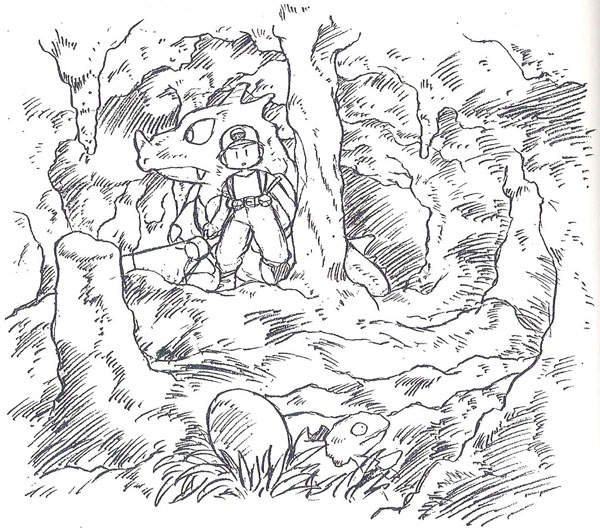
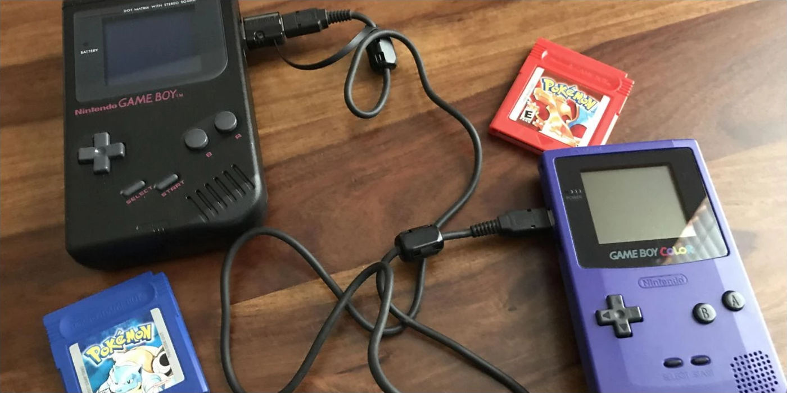
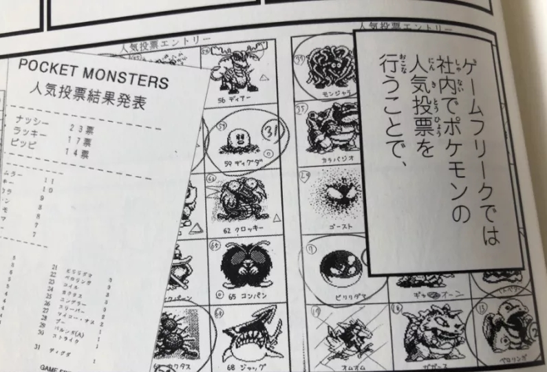
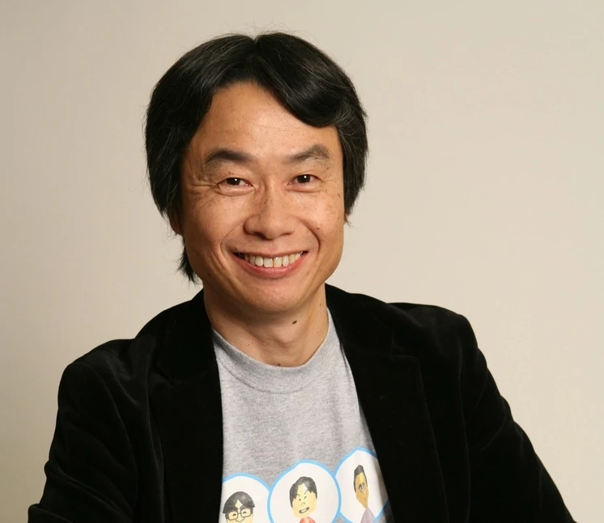

Satoshi Tajiri, né le 28 août 1965, est un créateur et producteur de jeu vidéo japonais. Il est notamment connu pour être le créateur de la franchise Pokémon et le fondateur et président du développeur de jeux vidéo Game Freak.
Le Créateur de Pokémon
SATOSHI TAJIRI

Surnommé “Docteur insecte” il est le mystérieux créateur de Pokémon.
JEUNESSE
Il est né à Tokyo d'un père vendeur automobile pour Nissan (Yamasaru Satori) et d'une mère au foyer (Nol Niyan). Enfant, Tajiri faisait une collection d'insectes, ce qui deviendra une source d'inspiration pour son travail dans le jeu vidéo plus tard. Il était tellement intéressé par la collecte et l'étude des insectes qu'il hérita du surnom « Dr Bug » (« docteur Insecte ») par ses pairs.
Satoshi devient passionné par les jeux d'arcade adolescent ce qui le conduit à vouloir créer lui-même des jeux vidéo. Après avoir démonté sa Famicom, pour voir comment elle fonctionnait, il gagne un concours de création de jeu vidéo organisé par Sega.

À cause de sa fascination pour les jeux vidéo, Satoshi Tajiri faillit ne pas obtenir son diplôme de fin d'études. Son père tente même de lui donner un travail chez The Tokyo Electric Power Company mais Tajiri refuse.
PARCOURS PROFESSIONNEL
“Je provoque des crises d’épilepsie” - Porygon -
Dans les années 1980, Satoshi Tajiri crée le magazine de jeux Game Freak. Le rejoindra en premier Ken Sugimori, qui a dessiné toutes les images de Pokémon.
Le 26 avril 1989, ils fondent leur studio de développement de jeux vidéo qu'ils appellent Game Freak, comme leur magazine. En 1991, Tajiri découvre la Game Boy de Nintendo. Quand il voit pour la première fois les « Câbles Link », câbles de connexion permettant un jeu multijoueur entre deux Game Boy, il imagine aussitôt des insectes qui rampaient le long de ceux-ci. Les Pokémon étaient nés dans son esprit.

le fameux câble-link qui relie deux gameboy
Le jeu se base au départ sur certaines des idées de « Creatures », un autre studio concevant des jeux vidéo. Après Game Freak, Tajiri part travailler pour Nintendo et continue à réfléchir au développement de ses insectes.

Le projet Pocket Monster (qui deviendra Pokémon par la suite
Il devient ami avec Shigeru Miyamoto, le créateur des séries Mario et Zelda. En référence à Miyamoto et Tajiri, Satoshi et Shigeru sont des noms par défaut sélectionnables par le joueur pour son personnage ou pour le rival dans Pokémon Vert et Rouge.

Shigeru Miyamoto
Plus tard, ces mêmes noms ont servi dans la version japonaise du dessin animé Pokémon, où Sacha (inspiré par le personnage jouable du jeu vidéo) est appelé Satoshi et Régis (inspiré par le personnage rival du jeu vidéo) est appelé Shigeru.
OEUVRES
QUIZ
Question
Choix 1
Choix 2
Choix 3
Choix 4